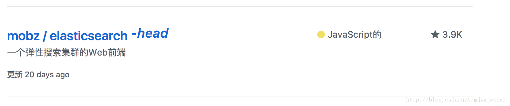
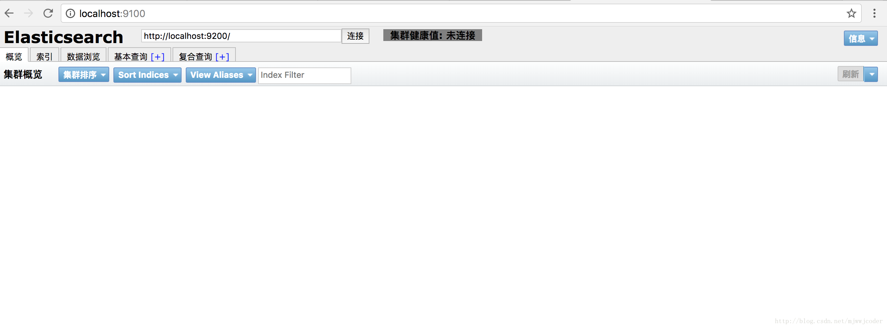
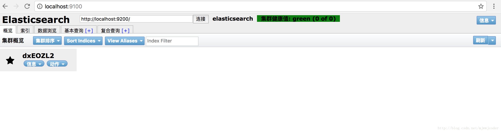
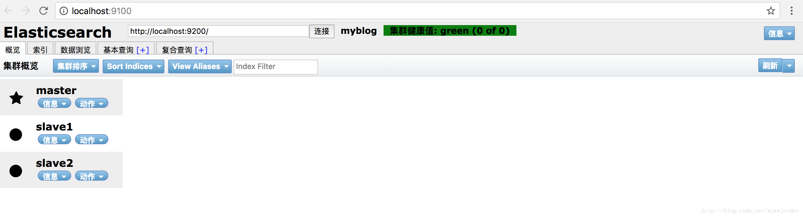

Elasticsearch 是一个分布式可扩展的实时搜索和分析引擎。它能帮助你搜索、分析和浏览数据，而往往大家并没有在某个项目一开始就预料到需要这些功能。Elasticsearch 之所以出现就是为了重新赋予硬盘中看似无用的原始数据新的活力。
无论你是需要全文搜索、结构化数据的实时统计，还是两者的结合，这本指南都会帮助你了解其中最基本的概念，从最基本的操作开始学习 Elasticsearch。之后，我们还会逐渐开始探索更加复杂的搜索技术，你可以根据自身的学习的步伐。
Elasticsearch 并不是单纯的全文搜索这么简单。我们将向你介绍讲解结构化搜索、统计、查询过滤、地理定位、自动完成以及你是不是要查找的提示。我们还将探讨如何给数据建模能提升 Elasticsearch 的性能，以及在生产环境中如何配置、监视你的集群。
入门
初始
Elasticsearch 是一个建立在全文搜索引擎 Apache Lucene(TM) 基础上的搜索引擎，可以说 Lucene 是当今最先进，最高效的全功能开源搜索引擎框架。
但是 Lucene 只是一个框架，要充分利用它的功能，你需要使用 JAVA，并且在你的程序中集成 Lucene。更糟的是，你需要做很多的学习了解，才能明白它是如何运行的，Lucene 确实非常复杂。
Elasticsearch 使用 Lucene 作为内部引擎，但是在你使用它做全文搜索时，只需要使用统一开发好的API即可，而并不需要了解其背后复杂的 Lucene 的运行原理。
当然 Elasticsearch 并不仅仅是 Lucene 那么简单，它不仅包括了全文搜索功能，还可以进行以下工作:
分布式实时文件存储，并将每一个字段都编入索引，使其可以被搜索。
实时分析的分布式搜索引擎。
可以扩展到上百台服务器，处理PB级别的结构化或非结构化数据。
这么多的功能被集成到一台服务器上，你可以轻松地通过客户端或者任何你喜欢的程序语言与 ES 的 RESTful API 进行交流。
Elasticsearch 的上手是非常简单的。它附带了很多非常合理的默认值，这让初学者很好地避免一上手就要面对复杂的理论，它安装好了就可以使用了，用很小的学习成本就可以变得很有生产力。
随着学习的深入，你还可以使用 Elasticsearch 更多高级的功能，整个引擎可以很灵活地进行配置。你可以根据自身需求来定制属于你自己的 Elasticsearch。
基本概念
对es有几个核心概念，开始学习之前理解这些概念将极大的帮助你理解后面的学习
Near Realtime（NRT)–接近实时
elasticsearch 是一个接近实时的搜索平台。通俗的讲就是，从你索引一个文档直到这个文档可被搜索会有一段时间的延迟（一般是1s）。个人理解就是你创建了个文档，会有将近1秒的延迟，别人才能搜索到这个文档
Cluster–集群
集群就是一个或者多个节点（服务器）的集合，承载着你的所有数据并在所有节点之间提供联合索引和搜索能力。一个集群被一个唯一的名字所标识，默认是elasticsearch。这个名字很重要，因为一个节点要加入集群，必须指定这个集群的名字。
确保在不同的环境不要使用相同的集群名字，否则节点将加入错误的集群。
注意，一个集群就有一个节点是合法的。除此之外，你也可以有多个相互独立的集群，每个用一个唯一的名字标识
Node–节点
节点就是集群中的一个单个服务器，它存储数据，参与集群的索引和搜索。就像一个集群，节点也用一个名字来标识，默认是一个随机的传奇人物的名字，在节点启动的时候被指定。
一个节点可以配置加入一个集群通过集群的名字。默认，每个节点设置为加入名字为elasticsearch 的集群，这就意味着，如果你启动了多个节点在你的网络-假定他们能彼此发现对方-他们将自动的组织成一个名字为elasticsearch的集群。
在一个集群中，你可以拥有你想要数量的节点。除此之外，如果没有其他elastisearch节点当前运行在你的网络上，启动一个节点将默认形成一个新的单个节点的名字为elastisearch的集群
index–索引
一个索引就是文档的集合，这些文档有几分相似的特性。比如，你可以有一个索引存储客户数据，另一个索引存储产品分类，另一个索引存储订单信息。一个索引用一个名字来标识（必须是小写），这个名字被用来指定索引当针对其中的文档执行索引、搜索、更新、删除操作时。
在一个集群中，你可以定义任意数量的索引，只要你想。
es 的index 相当于mysql 的database （个人理解）
Type–类型
在索引中，你可以定义一个或者多个类型。type是index的逻辑分类，怎么定义完全取决于你。大体上，具有相同字段的文档的集合被定义为一个type。打个比方，你运行了一个博客平台，且所有数据存储在了一个index里。在这个index里，你可以给用户数据定义一个type，给博客数据定义一个type，给评论数据定义一个type。
type相当于mysql的 table
Document – 文档
一个文档是可被索引的基本信息单元。例如，你可以有一个针对顾客的文档，还可以有个针对产品的文档，还可以有一个针对订单的文档。文档用json格式表示，此格式是普遍使用的一种数据交换格式。
在一个index/type中，你可以存储你想要数量的文档。注意，尽管一个文档物理上存在一个index中，一个文档事实上必须被指定到一个index中的type上。
document相当于myslq 的 row
shards & replicas – 分片与副本
一个index可能存储大量的数据，且超过了一个节点硬件的容量限制。比如，一个index存储了10亿个文档，这将占据1TB的硬盘，这不适合存储在一个节点的硬盘上，或者在如此大的数据量的情况下，从单一节点请求未免太慢。
去解决这个问题，elastisearch细分index为多个碎片称之为shards。当创建索引时，你可以定义你想要的shards数量。每个shard都是功能齐全、独立的‘index’,且可分布在集群的任何节点上。
分片主要有以下两点：
它允许你水平的拆分/扩展你的数据量
它允许你分发和并行的跨分片操作（可能在多个节点上），从而提高性能和吞吐量。
shard是如何分布的和文档是如何聚合回搜索请求点是完全由elasticsearch管理的，这对于你来说是透明的。
在网络/云环境，故障在任何时候都可能不期而至，这是非常有用和高度推荐的去部署一个故障转移机制，以防shard/node不知何故掉线或者消失因为某种原因。为此，elasticsearch允许你去给shards 部署一个或者多个拷贝被称为副本shards，或者副本简而言之。
副本重要的两点原因：
支持高可用当shard/node挂掉。基于这个原因，需要明确注意的是副本永远不要和他的shard分配到一个节点（node）上。
它可以扩展搜索量和吞吐量，因为搜索可以并行的在所有副本上执行
总结，每个index可以拆分成多个shards。一个index也可以被复制0次或者多次。一旦被复制，每个index将拥有主分片（primary)和副本分片（replica）。index在创建的时候可以指定shards和replicas的数量。index创建后，副本的数量可以在任何时候动态的调整，但是主分片（primary）的数量是不能调整的。
默认，每个index在es里被分配5个主分片和一个副本，这个的意思是如果你有至少两个节点在你的集群里，你的index将有5个主分片和另五个副本分片（1 个完整的副本），总共10个分片对每个index。
注意
每个es的shard 都是一个lucene index。在每个Luene index里，documents数量都有个上线。根据LUCENE-5843，这个限制是2,147,483,519(=integer.MAX_VALUE-128)。你可以监控shard size 使用_cat/shards api （之后会学习到）
安装
安装 JAVA
yum install java-1.7.0-openjdk -y
安装 Elasticsearch
了解 Elasticsearch 最简单的方法就是去尽情的玩儿它（汗），准备好了我们就开始吧。
安装 Elasticsearch 只有一个要求，就是要安装最新版本的JAVA。你可以到官方网站下载它：www.java.com
你可以在这里下载到最新版本的 Elasticsearch： elasticsearch.org/download
curl -L -O http://download.elasticsearch.org/PATH/TO/LATEST/$VERSION.zipunzip elasticsearch-VERSION.zipcdelasticsearch−VERSION
提示: 当你安装 Elasticsearch 时，你可以到 下载页面 选择Debian或者RP安装包。或者你也可以使用官方提供的 Puppet module 或者 Chef cookbook.
运行 Elasticsearch
Elasticsearch 已经蓄势待发，现在你便可以运行它了：./bin/elasticsearch
如果你想让它在后台保持运行的话可以在命令后面再加一个 -d
开启后你就可以使用另一个终端窗口来进行测试了:
curl ‘http://localhost:9200/?pretty’
你应该看到如下提示：1
2
3
4
5
6
7
8
9
10
11
12
13
14 "name" : "dxEOZL2",
"cluster_name" : "elasticsearch",
"cluster_uuid" : "HGYuUvO_TYeS7I4W2x9eXQ",
"version" : {
"number" : "6.1.1",
"build_hash" : "bd92e7f",
"build_date" : "2017-12-17T20:23:25.338Z",
"build_snapshot" : false,
"lucene_version" : "7.1.0",
"minimum_wire_compatibility_version" : "5.6.0",
"minimum_index_compatibility_version" : "5.0.0"
},
"tagline" : "You Know, for Search"
}
这就说明你的 Elasticsearch 集群 已经上线运行了，这时我们就可以进行各种实验了。
安装Elasticsearch-head插件
由上面curl ‘http://localhost:9200/?pretty’ 的结果可见是一些json格式的字符转并不直观，因此head插件为我们提供了一个很友好的可视化web界面，并且可以进行基本的数据检索，模拟等GitHub搜索Elasticsearch-head 选择下图这个打开下载解压到指定目录
node -v查看node版本必须大于6.0 没有可先安装node
进入到解压的head目录执行npm install进行包安装
安装完成后执行npm run start启动当出现如下所示表明启动成功1
2
3
4
5
6elasticsearch-head@0.0.0 start /Applications/javatools/Elasticsearch/elasticsearch-head-master
grunt server
(node:30630) ExperimentalWarning: The http2 module is an experimental API.
Running "connect:server" (connect) task
Waiting forever...
Started connect web server on http://localhost:9100
复制http://localhost:9100 浏览器中打开便可看到如下图所示

目前是未连接状态，因为Elasticsearch没启动且和head是两个独立的进程之间存在跨域问题，因此要做如下配置
现将head停掉进入Elasticsearch目录执行vim config/elasticsearch.yml
在文件的最下面加上http.cors.enabled: true
http.cors.allow-origin: "*"
保存退出
执行./bin/elasticsearch -d后台启动elasticsearch
在进入head目录执行npm run start启动head插件
再次去浏览器出阿信刚才的页面出现如下页面
保存退出
执行./bin/elasticsearch -d后台启动elasticsearch
在进入head目录执行npm run start启动head插件
再次去浏览器刷新刚才的页面出现如下页面

此时我们就可以看到安装Elasticsearch的节点信息了，上面的集群健康状态由原来灰色变为绿色表示正常，如果是黄色说明集群健康有问题但可以使用，如果是红色则基本可能出现数据丢失等的问题基本不可用了。
注意：这里连接的的是本地的安装Elasticsearch所以是localhost 如果连接其他地址可在head目录下修改_site/app.js文件里的地址this.base_uri = this.config.base_uri || this.prefs.get("app-base_uri") || "http://localhost:9200";
把localhost修改成你es的服务器地址，如:this.base_uri = this.config.base_uri || this.prefs.get("app-base_uri") || "http://10.10.10.10:9200";
至此head插件安装完成至此head插件安装完成
分布式安装
进入Elasticsearch 目录执行vim config/elasticsearch.yml
在最后添加1
2
3
4
5
6
7cluster.name: myblog
//指定指挥官节点为master
node.name: master
//确定节点为主节点
node.master: true
//绑定IP端口默认为9200
network.host` 127.0.0.1
将Elasticsearch拷贝多份（这里都在一台机器暂定两份）安装方法不变分别命名为slave1和slave2
修改slave1配置 vim config/elasticsearch.yml 同样后面加上1
2
3
4
5
6node.name: slave1
network.host: 127.0.0.1
//默认为9200和master端口区分开
http.port: 8200
//指定集群指挥官地址
discovery.zen.ping.unicast.hosts: ["127.0.0.1"]
同样方法配置slave2然后启动打开http://localhost:9100/ 如下图所示表示分布式安装完成 ⭐️表示指挥官⭕️表示随从
